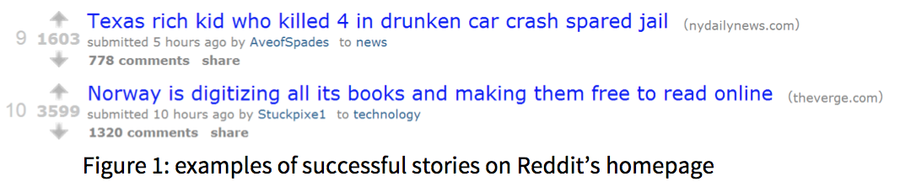
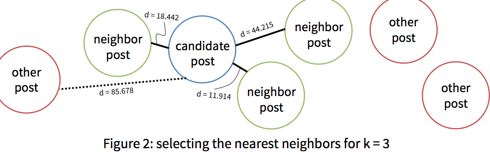

A Reddit popularity predictor, for EECS 349 at Northwestern University.
Contact the authors:
Brian Lange
Wesley Sun
Sheng Wu
Paper: Download PDF
Content aggregation is a huge business on the internet. Reddit alone gets 15 million unique visitors and 150 million pageviews per month. On Reddit, users post text or links to webpages that are voted on by other users, resulting in a score that determines how many future visitors will see the post. Successful Reddit posts generate tens to hundreds of thousands of hits for a webpage, resulting in valuable ad revenue. Websites like Gawker for which web traffic is a main source of revenue would love to know exactly what to post, when to post it, and what words to use in a title to maximize the number of visitors they get.
We set out to predict the score of a Reddit post using data from the Reddit API. Existing work in this area has used regression to predict future score, but we wanted to use only data from the Reddit API and to see how accurately a learner could perform. With this project, we wanted to explore these questions:
For our learner, we used a k-nearest neighbor regressor implemented in Python. To predict the score of a given Reddit post, the regressor finds the k “nearest” neighbors of that post by combining several distance measures to find the k nearest stories. Then, it predicts a score for the candidate story by outputting the mean score of those k nearest neighbors.
Data analyzed included all new posts from November 20 to December 7, 2013 on 7 subreddits, for a total of 159,695 posts. Subreddits are communities within Reddit that accept posts within specific topics, and we chose the following that are among the most popular: /r/AskReddit, /r/News, /r/Music, /r/Videos, /r/Politics, /r/Funny, and /r/Cats.
Our regressor considers the following features of a Reddit post:
To train our learner, we tried several weights for each feature, varying the weights one at a time, evaluating its performance using 30-fold cross validation on half of the data and recording the total mean squared error. We used the same procedure to test several values of k. Success for us was whether our learner had a lower mean square error than baseline – that is, using the average score of a post (38.0594 points) for all score predictions.
We found that the optimal set of weights was (1, 0, 4, 0, .25, 0) with k = 5. Using half of the data (the half not used for development), we found that the mean squared error using our optimal values was 70305.9 pts2 w/stdev of 15723, versus baseline’s MSE of 61862.2 pts2 w/stdev of 15939. Based on a paired-sample t-test performed on each fold of validation, our regressor conclusively performed worse than baseline.
We learned that the scope of our project was not sufficient to accurately predict the score of Reddit submissions. One of our limitations was that training k-nearest-neighbor learners can take a significant amount of time. For future work to improve accuracy, we would try including additional features (e.g. linked content) and explore more of the space of feature weight combinations.
For more detail, please read our paper, linked in the sidebar/header. Thanks for your attention!